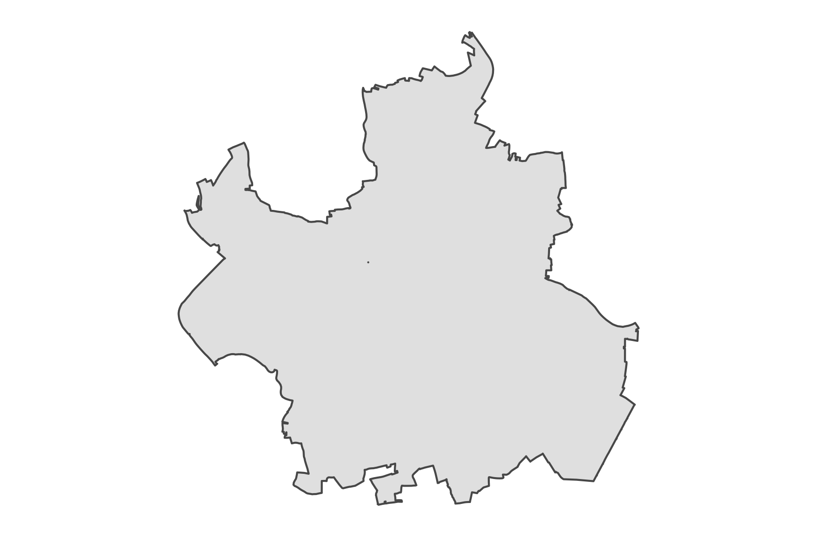

2 Shapefiles
library(tidyverse)
library(sf)Die restlichen Shapefiles (Stadtgrenze, Stadtteile, Gewässer, Autobahnen) stammen vom Amt für Stadtentwicklung Regensburg
2.1 Stadtgrenze Regensburg
sf.regensburg <-
read_sf(here::here("data-raw/shapefiles/regensburg/gesamtstadt.shp")) |>
st_transform("WGS84") |>
rename(
"m2" = qm
) |>
select(m2, geometry)ggplot() +
geom_sf(data = sf.regensburg) +
ggthemes::theme_map()
2.2 Stadtteile
sf.districts <-
read_sf(here::here("data-raw/shapefiles/districts/stadtbezirke.shp")) |>
st_transform("WGS84") |>
rename(
"district" = Name,
"ha" = Hektar
) |>
mutate(
m2 = ha * 10^4
) |>
select(district, m2, geometry)ggplot() +
geom_sf(data = sf.districts, linetype = 2) +
geom_sf(data = sf.regensburg, lwd = 1, alpha = 0) +
ggthemes::theme_map()
2.3 Autobahnen
sf.highways <-
read_sf(here::here("data-raw/shapefiles/highways/autobahn.shp")) |>
st_transform("WGS84") |>
rename(
"feeder" = ZUBRINGER
) |>
mutate(
feeder = case_when(
feeder == "j" ~ TRUE,
feeder == "n" ~ FALSE
)
)ggplot() +
geom_sf(data = sf.districts, linetype = 2) +
geom_sf(data = sf.highways, alpha = 0.6) +
geom_sf(data = sf.regensburg, lwd = 1, alpha = 0) +
ggthemes::theme_map()
2.4 Flüsse
sf.rivers <-
read_sf(here::here("data-raw/shapefiles/rivers/gewaesser.shp")) |>
st_transform("WGS84") |>
select(geometry)ggplot() +
geom_sf(data = sf.districts, linetype = 2) +
geom_sf(data = sf.rivers, alpha = 0.6) +
geom_sf(data = sf.highways, alpha = 0.6) +
geom_sf(data = sf.regensburg, lwd = 1, alpha = 0) +
ggthemes::theme_map()
2.5 Finale Karte
ggplot() +
geom_sf(data = sf.districts, aes(fill = district), alpha = 0.7) +
geom_sf(data = sf.rivers, alpha = 0.7, fill = "lightblue") +
geom_sf(data = sf.regensburg, lwd = 1, alpha = 0) +
theme_void() +
theme(
legend.position = "right",
legend.title = element_blank()
)